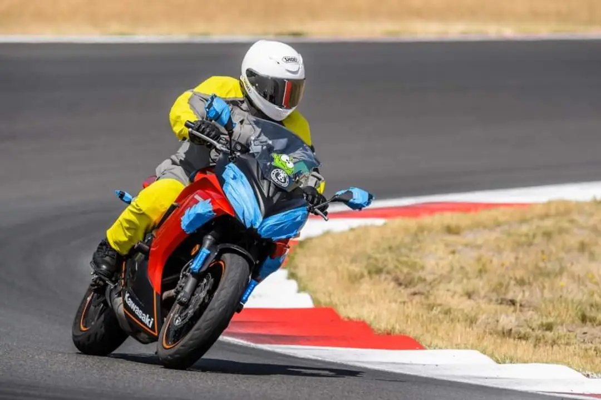

Level 4 Riders
This level is for riders with a valid Washington motorcycle endorsement or permit and are comfortable riding their own motorcycle. Courses at this level teach the awareness needed to spot and avoid common issues, and trains you to make lifelong behavior modifications by deliberately increasing your awareness of personal abilities and limitations of you and your motorcycle. Experienced riders quickly learn that avoiding emergencies before they happen is better than reacting to them afterwards. Topics covered include common issues such as decreasing radius corners before you enter them, as well as cornering skills to handle surprises such as sand which might appear mid-corner. Use of your own motorcycle is required for this level of instruction. Decades of riding experience is not needed to become an advanced rider, nor will decades of experience alone make you an advanced rider.
The following are courses in Western Washington which align with Level 4:
- Washington Motorcycle Safety Training Street Skills Course
- Washington Motorcycle Safety Training More Cornering Course
- Cascade Motorcycle Safety Street Strategies
- Cascade Motorcycle Safety Gymkhana

Yours truly executing a left hand turn at Ridge Motorsports Park. Look left, press left, lean left, go left.